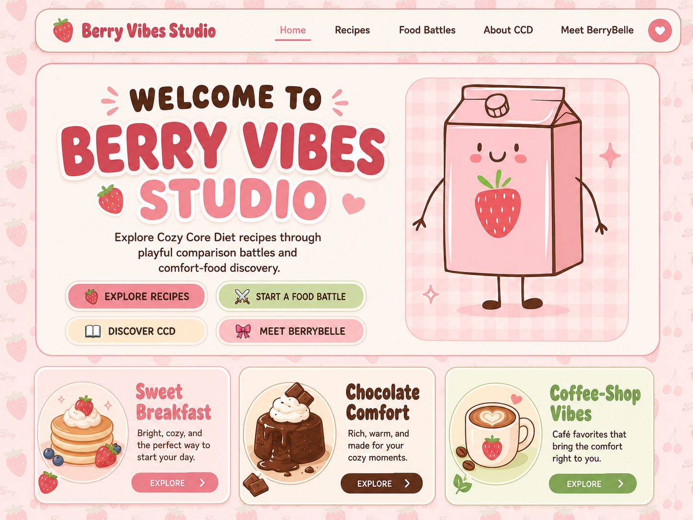
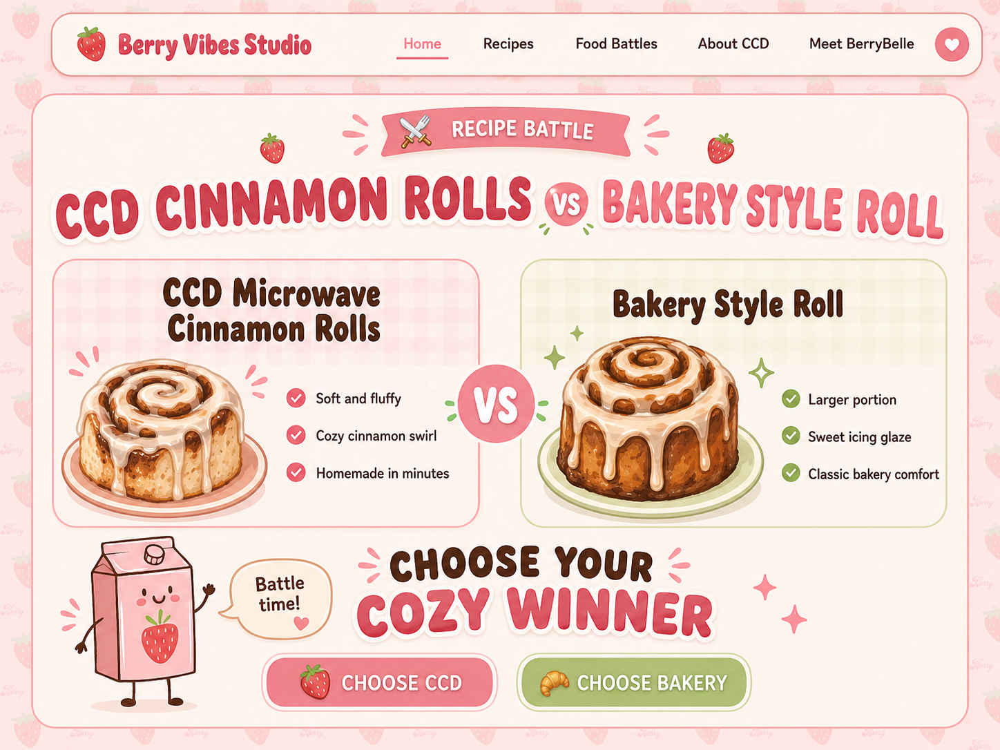
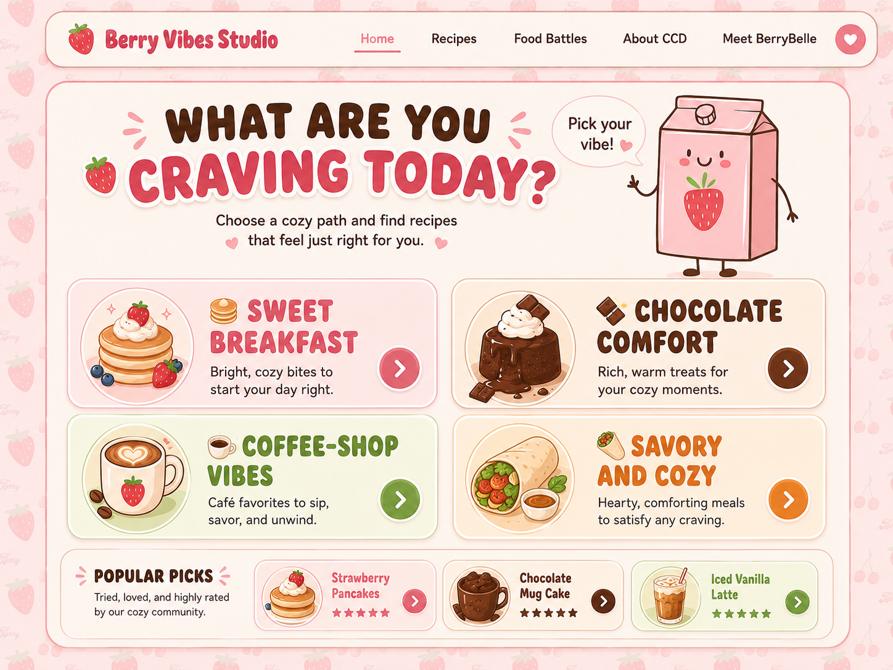
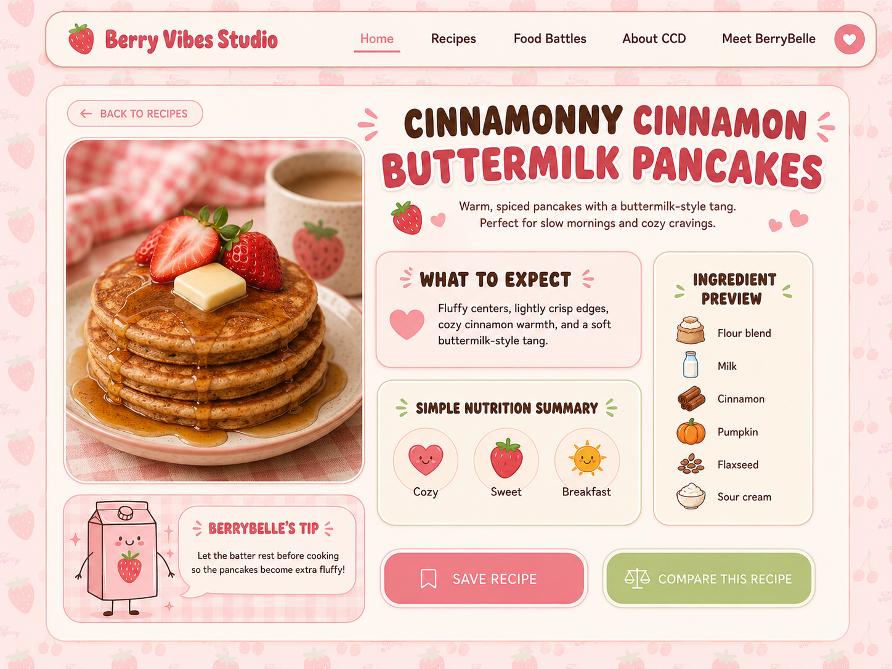
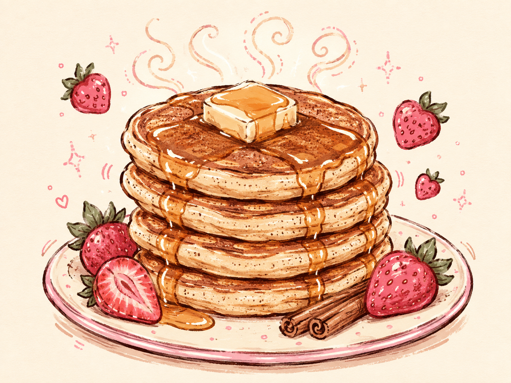
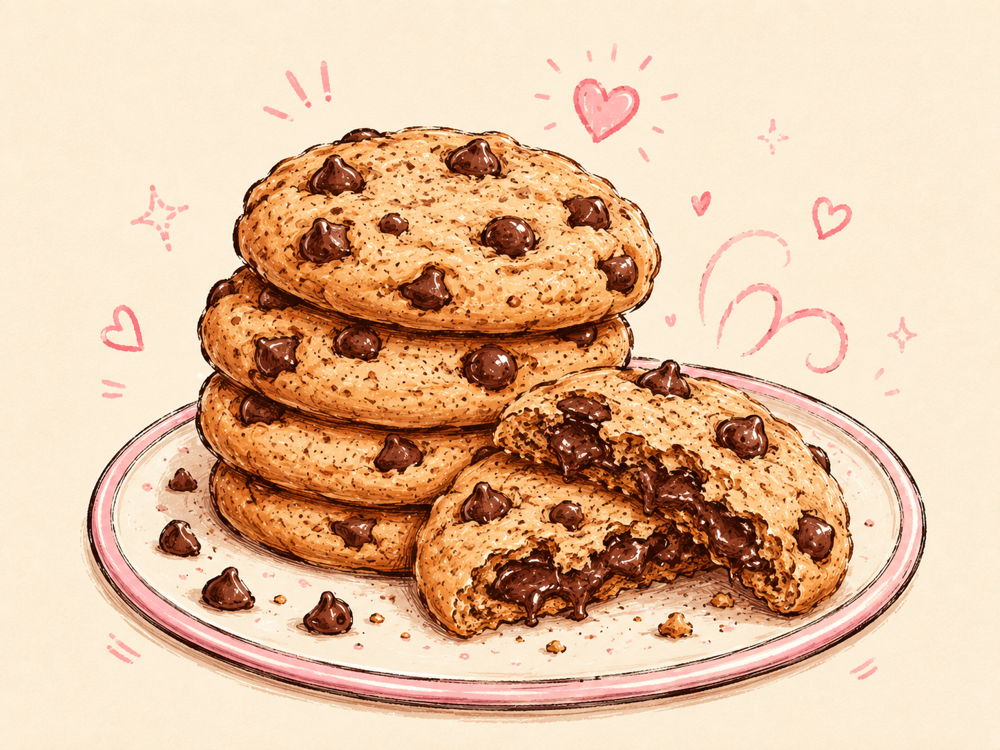
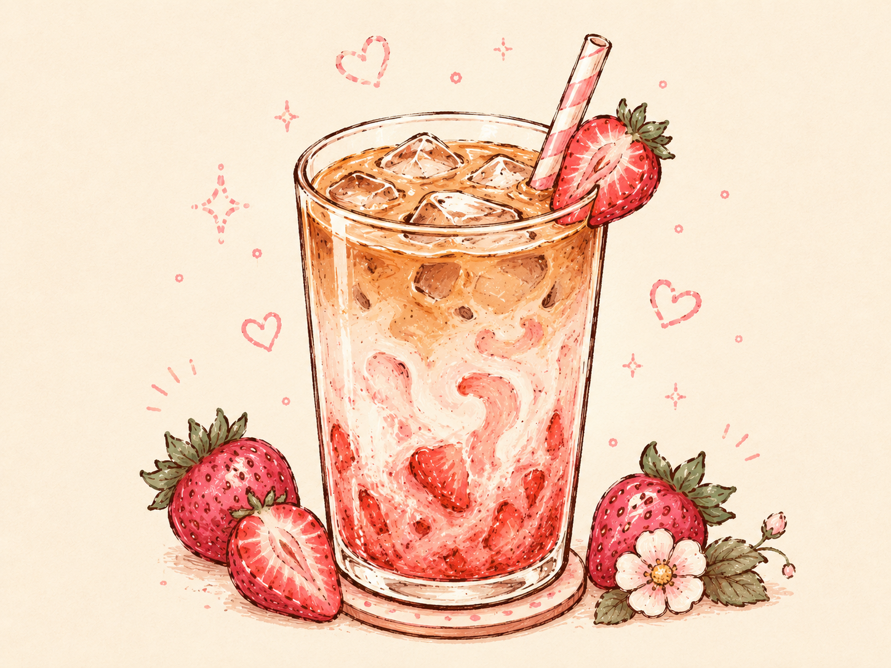
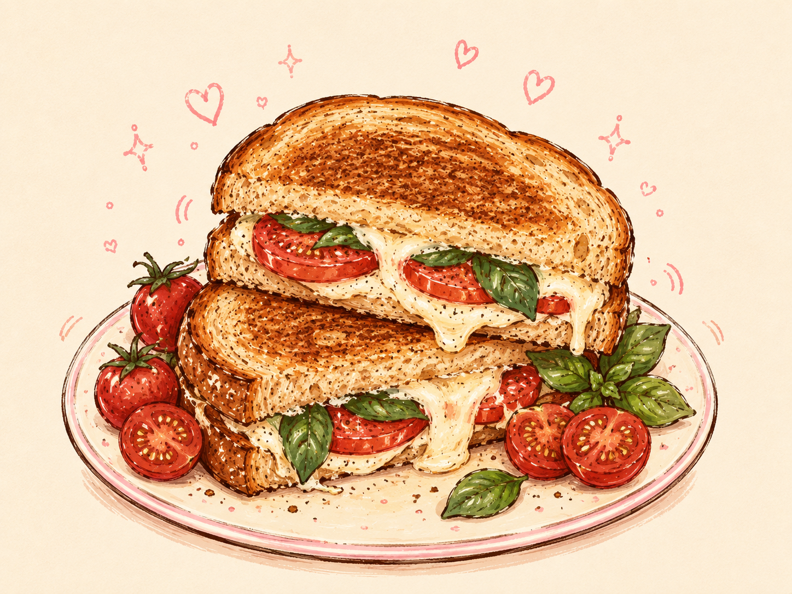

BerryBelle
A recurring mascot connects the branding and guides the viewer through the project.
ATCM 2335 · FINAL PROJECT DOCUMENTATION
A continuous live cookbook built from personal recipes, playful branding, custom food sketches, and animated web interactions.

01 · WRITING PORTFOLIO
Berry Vibes Studio is a continuous digital cookbook that transforms Cozy Core Diet recipes into a playful editorial web experience. Custom food sketches, animated recipe reveals, BerryBelle, and scrolling interactions guide visitors through forty-four recipes. The project combines illustration, branding, web design, and storytelling to make recipe browsing feel personal.
02 · ORIGINAL MOCKUPS
The first mockups established the strawberry palette, BerryBelle mascot, rounded typography, recipe navigation, and playful editorial tone before coding began.




03 · DEVELOPMENT
The stock food images used during development were temporary. The final direction replaces them with custom hand-drawn recipe artwork so the website feels authored, cohesive, and connected to the Berry Vibes identity.




04 · FINAL VISUAL SYSTEM
A recurring mascot connects the branding and guides the viewer through the project.
Hand-drawn recipe images replace generic stock photography and make the cookbook feel personal.
The website unfolds as one long editorial sequence instead of separate app-like screens.
Recipe reveals, scroll progress, and subtle hover animation create movement without turning the site into a game.
05 · 250–300 WORD PROJECT DESCRIPTION
Berry Vibes Studio is a continuous digital cookbook that combines illustration, branding, motion, and web design into one playful recipe experience. Its artistic merit comes from the way the visual system stays consistent across the entire project. The strawberry-inspired palette, rounded typography, BerryBelle mascot, hand-drawn food sketches, recipe cards, and animated scrolling all work together to create a recognizable personality. Rather than presenting recipes as a plain list, the site treats each recipe as part of an editorial sequence, allowing the visitor to move through the cookbook like a visual story.
The project began with mockups that used stock food photography as placeholders. During development, I replaced those images with original recipe sketches so the final website would feel more personal and visually authored. I also refined the project from an early food-battle concept into a continuous live cookbook, which made the interaction more focused and better suited to a single-page website.
The work is original because it combines my own Cozy Core Diet recipe collection with my Berry Vibes Studio branding and mascot. I was inspired by the dramatic scrolling and centered-product presentation of the Ketchup or Makeup website, but I transformed that idea into a different purpose: a digital cookbook where recipe illustrations, cards, and motion guide the user through food content. The project is relevant to my graphic design and web design practice because it demonstrates how branding, illustration, information organization, and interaction design can work together in a professional portfolio piece. It also shows how an everyday subject can become a memorable, personal, and interactive visual system.
06 · PROFESSIONAL DOCUMENTATION
This page tells the project story from concept to final visual system, so a new viewer can understand the goal, process, design decisions, and final direction without relying only on a live-project link.